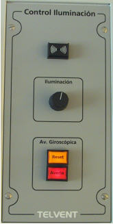

Control de Iluminación
El módulo de permite al operador regular la intensidad de la iluminación de la Consola de Gobierno y dispone de un zumbador para alarma acústica por avería. Además incluye el indicador de avería y pulsador de reset del equipo Repetidor de Giróscopo.

Contiene los siguientes elementos:
- Alarma Sonora: zumbador para la alarma acústica de avería en cualquiera de los equipos simulados en esta consola.
- Regulador de Iluminación: permite ajustar la intensidad de luz de todos los pilotos, pulsadores e indicadores de esta consola mediante un regulador giratorio.
- Pulsador Reset del Giróscopo: pulsador de reset asociado al equipo Repetidor de Giróscopo. Ver apartado Giróscopo.
- Indicador de Avería del Giróscopo y Pulsador de Enterado: este indicador rojo se ilumina de forma intermitente en rojo cuando el instructor introduce una condición de avería en el equipo Repetidor de Giróscopo. Cuando el operador lo presiona (reconociendo la avería), el indicador se ilumina de forma fija, y finalmente se apaga cuando el instructor elimina la condición de avería de este equipo.